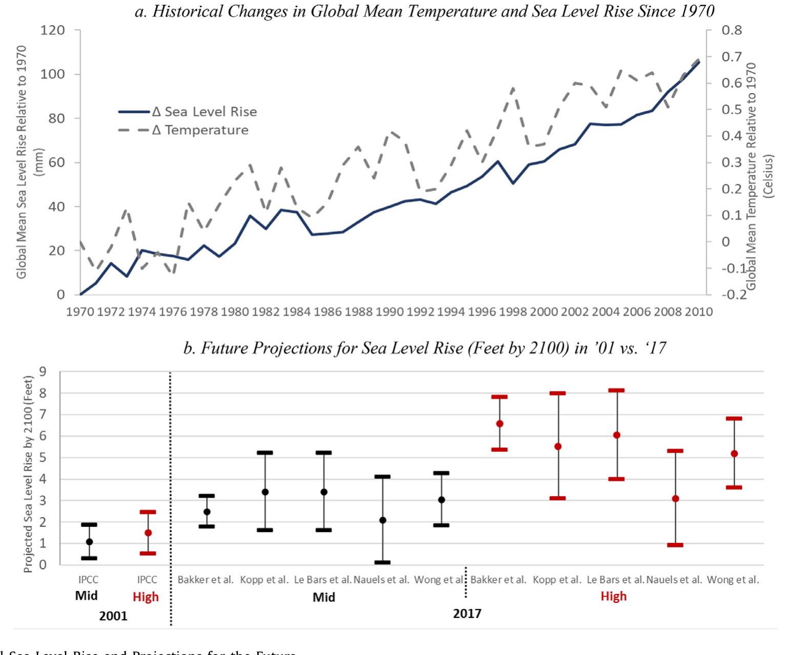
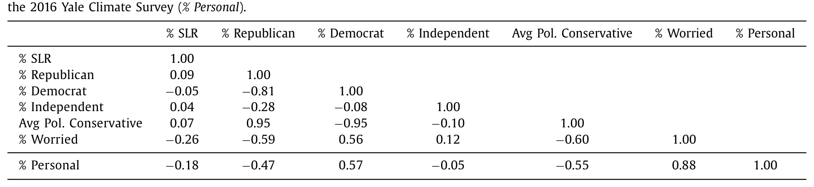
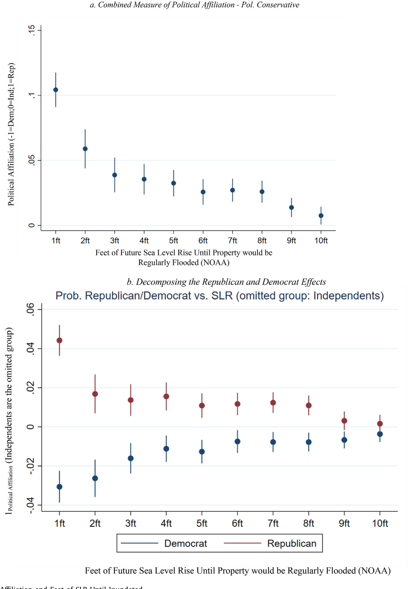
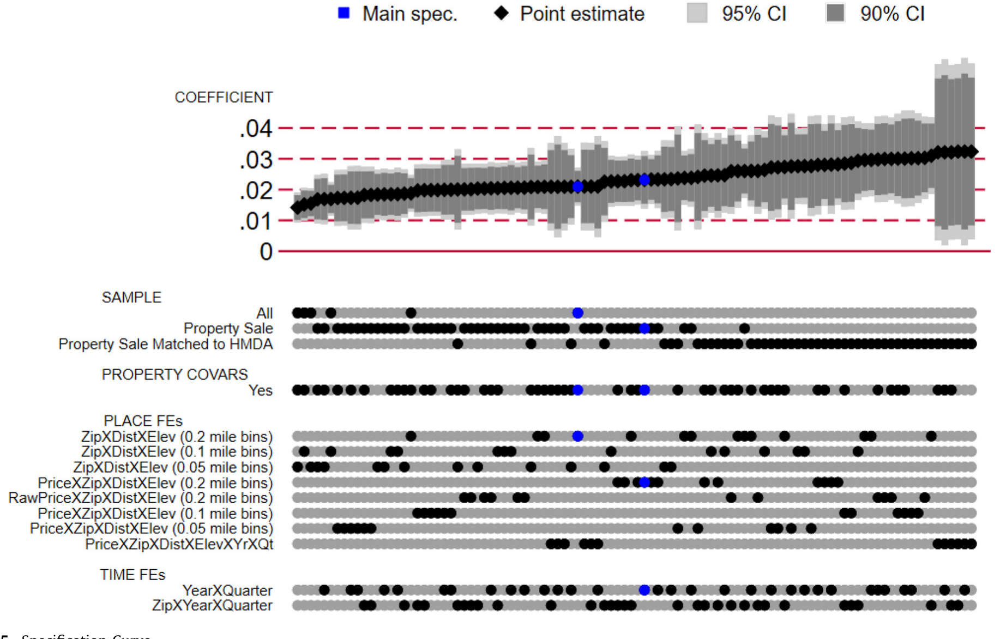
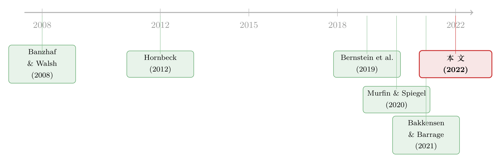

你信不信海平面会上升，写在了你家的海拔里
本文读的是 Bernstein, Billings, Gustafson & Lewis (2022, Journal of Financial Economics)：在同一个邮编、海拔与离岸距离都几乎一样的两栋房子里，暴露在海平面上升风险下的那一栋，越来越可能属于共和党人、越来越不可能属于民主党人——对中度暴露的房产，这道「党派居住缺口」已超过 5 个百分点，且在六年里翻了不止一倍。
1 引言：一个嘴上说说，还是真金白银的问题
2020 年皮尤（Pew）的一份民调里，研究者请美国登记选民给一串政策议题排优先级：移民、控枪、医保、反恐、种族关系……结果，在所有议题中，气候变化是党派分歧最大的那一个。共和党人最不认为它该是「总统与国会的头等大事」，民主党人却把它和环保、医保、教育一起排在最靠前。
这当然不新鲜。真正有意思的问题在后面：这种分歧，仅仅停留在嘴上吗？ 一个人可以在民调里、在饭桌上、在社交媒体上慷慨陈词，但当他真要掏出一生中最大的一笔钱去买房子时，他的气候信念会不会悄悄地、却又结结实实地写进这笔交易里？
这正是本文要回答的事。作者们选了一个极其干净的场景——海平面上升 (sea level rise, SLR) 与美国沿海社区的住宅。为什么是它？因为这个场景把三件事凑齐了：第一，赌注极大，住房常常是一个家庭最大的一笔财富（Campbell, 2006），而 SLR 一旦发生，淹掉的房子价值归零；第二，风险在远处，SLR 的严重后果要等到 2100 年前后，这恰好可以检验「遥远的风险」能不能影响「今天的决策」；第三，也是最妙的一点——暴露程度看得见、摸得着。NOAA 把未来海平面上升 0 到 10 英尺会淹没的每一寸土地都画进了公开的 SLR 地图里。于是，在同一片海滨社区里，两栋位置相仿的房子，可以有截然不同的 SLR 暴露。

Figure 1: Historical Sea Level Rise and Projections for the Future
顺带交代一下科学背景：图 1 显示，1970–2010 年全球海平面持续抬升，最后十年的上升速率（约 45.2 毫米/十年）是头三十年的两倍多；而科学界对 2100 年的预测，从 2001 年 IPCC 的「约 1 英尺」一路抬到 2017 年的「中排放 3 英尺、高排放 5 英尺」，且不确定性同步放大。换句话说，这不是一个静止的风险——它正变得越来越大、越来越「贵」。
2 识别策略：把「同一个邮编里的两栋房」摆在一起比
到这里，一个自然的反驳已经浮现：民主党人本来就更可能住在某些地方、共和党人更可能住在另一些地方。沿海暴露的房子如果碰巧集中在某类社区，那「党派缺口」不过是城乡、贫富、种族差异的影子罢了，跟气候信念毫无关系。
作者们处理这个问题的办法，是把比较推到极致的局部。基准模型里，他们放入的固定效应是：邮编 × 离岸距离档 × 海拔档 的交互项 (zip code interacted with granular distance-to-coast × elevation intervals)。这是什么意思？意思是，所有的比较都发生在同一个邮编、几乎相同的离岸距离、几乎相同的海拔这样一个极窄的格子里——同样的学区、同样的便利设施、同样的房价水平、同样的「能不能看见海」。在这样一个格子里，两栋房子唯一系统性的差别，就是 NOAA 地图判定的 SLR 暴露：有的房子地基中心点在海平面上升若干英尺后会被淹，有的不会。
被解释变量是房主的党派归属。处理组与对照组之间，比的就是「暴露 vs. 不暴露」对应的共和党/民主党持有概率之差。标准误聚类在合适的地理层级上。
这套设计的精髓，是把「居住分选」从「区域差异」里剥出来。你大可以说民主党人爱住城市、共和党人爱住郊区——没关系，邮编固定效应把它吸收掉了。本文要问的是一个更尖锐的问题：在你已经决定住进这个街区、这个海拔带之后，你会不会因为党派信念，进一步避开（或不在意）那栋会被海水淹到的房子？
作者还做了一件让人安心的事：把房子的实际成交价也作为弹性控制变量放进去。这一步很关键。房价是一个「无所不包」的汇总变量——买家对这栋房子所有可观测和不可观测的便利价值的评价，最后都浓缩进了他愿意付的价格里。控制住成交价之后，党派缺口依然稳健，这就基本排除了「暴露房产恰好在某些说不清的维度上更吸引共和党人」这一类解释。
3 数据：把三套全国性数据库缝在一起
讲到这里，得说说这篇文章的「体力活」。它的识别力，建立在一次相当壮观的数据拼接上：
- 房产：来自 Zillow 的
ZTRAX（Zillow Transaction and Assessment Dataset），覆盖全美 2750 个县、超过374 million条公开记录、200 million多个地块的估价与房产特征——地理坐标、面积、卧室/卫生间数、建造年份、房型、是否自住、买卖双方地址等等。 - 暴露：来自
NOAA公开的 SLR 地图（Marcy et al., 2011），按地块逐一计算「地基中心点在 mean higher high water 下、需要多少英尺 SLR 才会被淹」，给出 0 到 10 英尺的暴露刻度。全美约有3 million栋房子落在这个区间里。 - 党派：来自
L2的选民登记数据，含190 million条选民记录，按地址与房产匹配，清洗映射为「Democrat / Republican / Independent」。 - 收入等控制：通过模糊匹配并入
HMDA（Home Mortgage Disclosure Act）。
样本怎么一层层收窄？ZTRAX 与 NOAA 能匹配上 26.65 million 条观测；其中能同时拿到准确离岸距离、海拔与党派的约 16 million 条；要求并入最近一次成交价时降到约 3.9 million 条；再要求匹配 HMDA 时约 1.5 million 条。研究范围限定在「沿海社区」——离岸 2 英里以内、且所在县至少有一栋房产会被 10 英尺 SLR 淹没。
在动手回归之前，先看一张县级层面的相关性表，它把这篇文章要讲的张力一口气摊开了。

Table 1
如表 1 所示，越保守的县，SLR 暴露反而越高（% SLR 与 % Republican 的相关系数为 0.09，与 % Democrat 为 −0.05），但对气候变化越不担心：作者构造的政治保守度指标与 2016 年耶鲁气候调查中「担心气候变化」的占比相关系数为 −60%，与「认为气候变化会影响到自己」的占比为 −55%。一句话——最暴露的人，恰恰最不担心。这恰是全文最深的那根刺。
4 主要结果：超过 5 个百分点的缺口，六年翻了一倍多
现在来对账。核心发现是：相对于其他可观测特征都等价的未暴露房产，登记的共和党人更可能、民主党人更不可能持有暴露于 SLR 的房子。对中度暴露的房产，这道党派居住缺口超过 5 个百分点，对应暴露房产中共和党人占比高出约 11%。而且，暴露越「迫近」（需要的 SLR 英尺数越少就会被淹），分选越强——但即便对那些「淹没还很遥远」的房子，分选依然存在。这后一点很重要：它说明人们是在为长期风险做前瞻性的分选，而不只是对眼前的洪水做反应。

Figure 4: Political Affiliation and Feet of SLR Until Inundated
如图 4 所示，横轴是「还差多少英尺 SLR 这栋房就会被淹」，纵轴是党派构成；随着房子越来越「安全」（需要的英尺数越多），共和党占比单调下降、民主党占比单调上升。这条曲线把整个故事压成了一张图。
接着，一个自然的问题是：这会不会只是某种巧合的设定换个角度就消失了？作者用了 Simonsohn et al. (2020) 的设定曲线 (specification curve) 分析来回应——把空间固定效应做得越来越细、把子样本换来换去，跑出成百上千个回归，看系数的整体分布。

Figure 5: Specification Curve
如图 5 的设定曲线所示，党派分选的估计在各种设定下都稳健地落在同一侧，并未因为换了固定效应粒度或子样本而翻号或归零。
但真正关键的一步，是三组「机制检验」，它们要逼问：这到底是不是党派信念驱动的分选？
- 不是别的人口学特征在作怪。控制住选民的年龄、种族、收入、教育之后，党派分选依旧。
- 不是当下的洪水风险在作怪。党派归属与「当前风暴潮暴露」（短期洪水的主因）并不相关——也就是说，分选盯的是长期 SLR，而非眼前的水患。
- 业主有，租客无。在业主中（无论自住与否）都能看到分选，但在租客中看不到。这一条尤其有说服力：如果暴露房产真有某种「天生吸引共和党人」的属性，那租客也该被分选；可它只发生在「要为这笔资产的长期风险负责」的业主身上，正与「民主党人因担心长期 SLR 而在购房决策上避开」相吻合。
然后是横截面上的「加码」：在相对海平面上升更快（地面在相对下沉）或潮差更大的地区，分选更强；在立法机构由共和党控制的州，分选也更强——作者把后者解释为，民主党人预期到当地政府不太会出手做气候适应，于是更不愿买暴露房产。
最后是时间维度的反转。作者追踪了 2012–2018 年这道缺口的演变：它翻了不止一倍，且增量集中在 2016–2018 年，并集中在那些 2014–2016 年间「对气候变化的担忧上升最多」的县。换句话说，随着未来 SLR 的预测一年比一年严峻，分选不是在消退，而是在加速固化。
这把全文推向了一个发人深省的政策含义：通过前瞻性的党派分选，气候风险正在向「最可能投票反对气候友好政策、也最不可能主动适应」的那群人手里集中。最该为洪水做准备的人，恰恰是最不准备的人——而他们，最终可能要独自承担 SLR 的代价。
5 一点必要的「方法」澄清：为什么是「数量」，不是「价格」
这篇文章没有结构模型，但它在方法论上有一处值得单独点明的自觉，构成它对既有文献的一个微妙却重要的修正。
以往研究 SLR 对沿海房地产的影响，几乎都盯着价格：暴露房产是不是卖得更便宜？可作者借 Forsythe et al. (1992) 的洞见指出——市场价格由边际投资者决定，它对「平均资产持有人」的偏好其实说得很少。事实上，前人对很多沿海社区的自住房并未稳健地发现 SLR 的价格折价（Bernstein et al., 2019；Baldauf et al., 2020；Murfin & Spiegel, 2020）。
这就留下一道缝隙：价格上看不出来，不代表市场没反应。本文换了一个维度——数量：是谁在持有暴露房产？党派构成的系统性偏移，恰恰是价格信号捕捉不到的「数量响应」。这正是 Bakkensen & Barrage (2021) 与 Baldauf et al. (2020) 在理论上所建模的那种沿着「数量」维度展开的气候影响。这是一处漂亮的视角转换：当价格沉默时，去数一数持有人的党派。
（关于「价格由谁决定、又对谁说了什么」这类边际—平均之辨，可参见《同一只股票，两个价格：用「A/H 比价」给货币政策的贴现率通道称重》里类似的思路。）
6 文献脉络
这条研究线，可以这样串起来。
最早的源头是 Tiebout 式的「用脚投票」——人们通过迁居来表达对地方公共品的偏好，Banzhaf & Walsh (2008) 用实证检验了这一思想，并把它和环境（dis）amenity 的分选联系起来。再往前一步，Hornbeck (2012) 用美国「黑色风暴」（Dust Bowl）的历史证明：环境灾难之后，迁移是主要的调整边际，但这种迁移往往是「负向选择」的（受教育程度更低、收入更低的人离开）。
接着，气候金融这条线把目光投向了海平面。Bernstein, Gustafson & Lewis (2019) 的「Disaster on the horizon」是直接前身，发现 SLR 暴露会压低房价；Murfin & Spiegel (2020)、Baldauf et al. (2020) 则在更多沿海社区里指出，自住房的价格折价并不稳健——这恰恰为「数量响应」留出了空间。与此同时，Bakkensen & Barrage (2021) 在理论与小样本调查中，把「洪水风险信念的异质性」与房价动态联系起来。

另一条平行的线，是党派信念如何渗入经济决策：从 McCright & Dunlap (2011) 论证政治立场调节美国人对气候变化的看法，到 Kahan et al. (2012) 发现连科学素养更高的专家，其对气候信息的解读也被党派深度中介；再到金融领域，Cookson, Engelberg & Mullins (2020) 和 Kempf & Tsoutsoura (2021) 揭示党派如何塑造投资者信念乃至信用评级分析师的判断。本文 (2022) 站在这两条线的交汇处：它把「党派信念」与「居住分选」第一次大规模地、用全美房产—选民匹配数据焊接在一起，证明分歧不止于言辞，而是写进了一栋栋房子的产权里。
（党派如何钻进本该客观的经济信息，可对照《同一则财报，两个头条：政治极化怎样钻进了「本该客观」的财经新闻》；关于居住与「不搬家」的另一种锁定机制，参见《被自己 3% 的房贷「锁」在原地》。）
7 评论与延伸（Q&A + 研究方向）
(a) 几个可能的疑问
Q：这和「民主党人本来就爱住城市、共和党人爱住郊区」有什么区别？
区别就在那组
邮编 × 距离档 × 海拔档固定效应。所有比较都发生在同一个邮编、几乎相同的离岸距离与海拔的极窄格子里——城乡、贫富、学区差异早被吸收掉了。本文问的不是「你住哪个城市」，而是「在你已经选定这个街区和海拔带之后，你会不会再避开那栋会被淹的房子」。
Q：会不会暴露房产恰好有某些「天生吸引共和党人」的属性，跟气候信念无关？
「业主有、租客无」这条结果基本堵死了这个解释。如果暴露房产真有这种属性，租客也该被分选；但分选只出现在要为长期风险负责的业主身上。再加上控制了实际成交价后缺口依旧，说明不是某种被价格汇总掉的隐性便利价值在驱动。
Q：为什么作者不直接看价格，而要去数党派？
因为价格由边际投资者决定，对「平均持有人」的偏好说得很少（Forsythe et al., 1992），而且前人对沿海自住房并未稳健发现 SLR 价格折价。本文的贡献正是换到「数量/持有人构成」维度，捕捉价格沉默处的市场响应。
Q：分选盯的是远期 SLR，还是眼前的洪水？
是远期。党派归属与「当前风暴潮暴露」不相关，分选却随长期 SLR 暴露的迫近而增强，且对「淹没还很遥远」的房子也存在。这是前瞻性分选的直接证据，也呼应了低贴现率下「遥远风险也能影响今日决策」的猜想（Giglio et al., 2014, 2021）。
Q：谁对谁错——是共和党人低估了风险，还是民主党人反应过度？
本文坦诚地说：无法判断。既然暴露房产折价存在、风险又高度不确定，作者无法分辨谁是更知情的一方。结果既可能是「同等知情下的自愿交易」，也可能反映某一方的错误信念。文章不下这个判断，只记录分选这个事实。
Q：5 个百分点的缺口，算大吗？
对应暴露房产中共和党人占比高出约 11%，已不算小；更值得警惕的是动态——2012–2018 年这道缺口翻了不止一倍，增量集中在 2016–2018 年。若趋势延续，沿海社区会逐渐积累起「最不关心气候风险」的投票群体，反过来影响当地的气候应对。
(b) 几个可能的研究问题与提案
1. 把「数量响应」搬到公司债/信用市场。 【经济故事】既然价格对气候风险常常「沉默」，那信用市场里会不会也有一个「持有人构成」的数量响应——比如高 SLR 暴露发行人的债券，是否系统性地从某类投资者（按地域、按 ESG 取向）手里转移到另一类手里？这正是把本文「数价分离」的洞见迁移到信用市场。 【可行性】中。需要把发行人/抵押品的地理暴露（NOAA SLR、洪水图）与债券持有人明细（如 eMAXX、保险公司 NAIC 持仓、共同基金持仓）匹配，识别上可借鉴本文的「同评级、同久期、同行业」局部比较。难点在持有人党派/信念代理变量的构造。
2. 外资持有人会不会「分选」气候暴露资产？ 【经济故事】本文讲的是国内党派信念；一个自然延伸是国别信念差异。来自气候政策更激进国家的投资者，是否系统性地少持有美国高碳/高物理风险资产？这能把「信念驱动的数量分选」推广到跨境层面。 【可行性】中偏低。需要按投资者母国拆分的持仓数据（TIC、机构持仓的国别归属），并为「母国气候信念」找到可信代理；识别上要担心母国—资产间的诸多混淆因素。
3. 分选的一般均衡放大效应。 【经济故事】本文是偏均衡分析。但即便温和的「想和同类住一起」的偏好，也能通过 Schelling 式的乘数效应放大成大规模隔离。党派气候分选会不会触发临界点式的「翻转」，让某些沿海社区在政治构成上急剧极化？ 【可行性】中。可在本文数据上做事件式检验（如某社区气候担忧骤升后的持有人构成动态），或构建带社会互动的结构分选模型来量化乘数。识别临界点是最大挑战。
4. 分选如何反噬地方气候适应投资。 【经济故事】文中已暗示：共和党立法州里分选更强，因为民主党人预期当地不会出手适应。能否直接检验「党派分选 → 地方气候投资（防洪、堤坝、保险）减少 → 风险进一步集中」这条因果链？ 【可行性】中。需要地方气候支出数据（如 CDP 的市政气候行动）、选民构成与 SLR 暴露的面板。识别上可利用立法机构党派控制权的断点（接近 50% 的州议会）做 RDD。
5. 把「数量分选」与流动性联系起来。 【经济故事】如果某类资产的持有人构成越来越单一（都成了同一党派/同一信念的人），那当风险冲击来临、大家信念同向变化时，这类资产会不会更容易出现「同向抛售」、流动性更脆弱？ 【可行性】低偏中。住宅市场缺乏高频交易数据，更适合搬到债券或 REITs；需要持有人构成的时序与流动性指标（成交、价差）的匹配，识别同向交易的外生冲击是难点。
8 参考文献与我的判断
我的评价是：这是一篇「设计胜于花哨」的实证。它最大的贡献有两层。其一，在度量上，它把全美房产、SLR 暴露与逐人选民登记三套庞大数据焊接起来，用「邮编 × 距离 × 海拔」的极窄格子做出了一个近乎实验室级别的局部比较；其二，在视角上，它把研究从「价格」挪到了「数量/持有人构成」，证明了一件以往被价格折价的沉默所掩盖的事——气候分歧已经写进了产权。「业主有、租客无」这条机制检验，是全文最优雅的一击。
对识别，我仍有两点担忧。第一，党派是被「持有」观测到的，分选机制本身仍是间接推断的：我们看到暴露房产里共和党人更多，但究竟是民主党人主动避开（卖出/不买），还是共和党人主动涌入，抑或两者皆有、各占多少，横截面数据难以完全拆开；2012–2018 的时序证据缓解了这点，但还不是逐笔交易的直接刻画。第二，L2 的党派归属在部分州是用其他可观测变量「预测」出来的，作者已做稳健性排除，但信念的代理终究不是信念本身——一个登记为共和党的人究竟「相不相信 SLR」，我们并没有直接测到。
后续我最想看到的，是把这套「数量分选」的逻辑接到交易层面和信用市场：用逐笔成交去识别到底是哪一方在动手，以及在公司债、市政债里能否找到同构的、价格之外的持有人分选。如果分选真如本文所暗示的那样会自我强化、并反噬地方适应投资，那它就不只是一个有趣的横截面事实，而是一条值得认真对待的气候金融的动态机制。
（气候作为一种可定价、可配置的金融对象，另见《保护，而不是砍伐：当「不动一棵树」也能赚钱》。）
参考文献
Banzhaf, H., Walsh, R. (2008). Do people vote with their feet? An empirical test of Tiebout. American Economic Review 98, 843–863.
Bernstein, A., Gustafson, M., Lewis, R. (2019). Disaster on the horizon: the price effect of sea level rise. Journal of Financial Economics 134, 253–272.
Bakkensen, L., Barrage, L. (2021). Going underwater? Flood risk belief heterogeneity and coastal home price dynamics. Review of Financial Studies. doi:10.1093/rfs/hhab122.
Campbell, J. (2006). Household finance. Journal of Finance 61, 1553–1604.
Cookson, J., Engelberg, J., Mullins, W. (2020). Does partisanship shape investor beliefs? Evidence from the COVID-19 pandemic. Review of Asset Pricing Studies 10, 863–893.
Forsythe, R., Nelson, F., Neumann, G., Wright, J. (1992). Anatomy of an experimental political stock market. American Economic Review 82, 1142–1161.
Hauer, M., Evans, J., Mishra, D. (2016). Millions projected to be at risk from sea-level rise in the continental United States. Nature Climate Change 6, 691–695.
Hornbeck, R. (2012). The enduring impact of the American Dust Bowl: short- and long-run adjustments to environmental catastrophe. American Economic Review 102(4), 1477–1507.
Kahan, D., Peters, E., Wittlin, M., Slovic, P., Ouellette, L.L., Braman, D., Mandel, G. (2012). The polarizing impact of science literacy and numeracy on perceived climate change risks. Nature Climate Change 2, 732–735.
Kempf, E., Tsoutsoura, M. (2021). Partisan professionals: evidence from credit rating analysts. Journal of Finance 76, 2805–2856.
McCright, A., Dunlap, R. (2011). The politicization of climate change and polarization in the American public's views of global warming, 2001–2010. Sociological Quarterly 52, 155–194.
Murfin, J., Spiegel, M. (2020). Is the risk of sea level rise capitalized in residential real estate? Review of Financial Studies 33, 1217–1255.